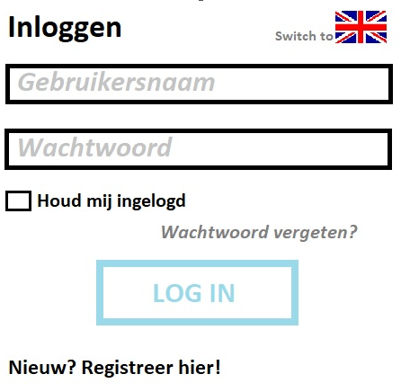
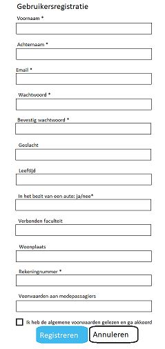

Requirement: 10
Use case: U9
Op deze pagina moet de klant zijn gebruikersnaam en wachtwoord kunnen invoeren. Er moeten dus twee velden zijn: een voor de gebruikersnaam en een voor het wachtwoord. Bij het wachtwoord moet het woord verdoezeld worden, dit moet weergeven worden met zwarte puntjes. Er moet een inlogknop zijn die, wanneer deze wordt ingedrukt, de inlogprocedure initieert.
Als het inloggen is gelukt, wordt de klant doorgestuurd naar de homepage. Als het inloggen niet is gelukt, geeft het een foutbericht weer en wordt er teruggegaan naar de login pagina. De gebruiker moet op deze pagina de mogelijkheid krijgen om de website te bezoeken in het Engels of in het Nederland. Als de pagina in het Nederlands wordt weergeven, zal er een switch zijn naar de Engelse webpagina en vice versa.
De gebruiker moet de mogelijkheid krijgen om zijn gebruikersnaam en wachtwoord te laten onthouden door de website. Er moet dus een selectievakje zijn om de gebruiker te onthouden: ‘Keep me logged in/‘Houd mij ingelogd.
Tot slot moet de gebruiker de mogelijkheid krijgen om zijn wachtwoord op te vragen als hij deze vergeten is (Forgot password/Wachtwoord vergeten), en de mogelijkheid om zich te registeren (‘New? Register here!/‘Nieuw? Registreer hier!).
SQL:
SELECT g.accountID, g.voornaam, g.achternaam
FROM Gebruiker AS g
WHERE g.Gebruikersnaam = ‘invoer gebruikersnaam (php)
AND g.Wachtwoord = ‘invoer wachtwoord (php)
Requirement: 6
Use case: U1
Is de klant nieuw en wil deze een account aanmaken, dan drukt hij of zij op de inlogpagina op ‘Nieuw? Registreer hier!. De klant wordt dan doorgestuurd naar de pagina waarop hij zich kan registreren. Bovenaan de pagina moet aangegeven worden dat het om een gebruikersregistratie gaat. In het registratieformulier moeten de volgende dingen kunnen worden ingevuld en aangegeven: gebruikersnaam, voornaam, achternaam, email, wachtwoord, bevestig wachtwoord, geslacht, leeftijd, in het bezit van en auto: ja/nee, verbonden faculteit, woonplaats, rekeningnummer en voorwaarden aan medepassagiers.
Zeven van deze twaalf vakjes zijn verplicht om in te vullen en daarom moet achter deze specifieke vakken een sterretje staan waarmee dat wordt aangegeven.
Onderaan de pagina moet er nog akkoord worden gegaan met de voorwaarden. Dit moet worden gedaan door een vierkant vakje aan te klikken.
Tot slot is er de keus om door te gaan met registreren en om toch te annuleren. Registreren zal gebeuren met een lichtblauw vakje en annuleren met een wit vakje.
SQL:
Algemene registratie:
INSERT INTO ‘Gebruiker’ (‘Gebruikersnaam’, ‘Voornaam’, ‘Achternaam’, ‘Email’, ‘Wachtwoord’, ‘Bevestig wachtwoord’, ‘Geslacht’, ‘Leeftijd’, ‘In het bezit van een auto ja/nee’, ‘Verbonden faculteit’, ‘Woonplaats’, ‘Rekeningnummer’, ‘Voorwaarden aan medepassagiers’)
VALUES();
Meerijder registratie:
INSERT INTO ‘Meerijder’ (‘id’, ‘voorkeur_id’, ‘faculteit’)
VALUES();
Chauffeur registratie:
INSERT INTO ‘Chauffeur’ (‘id’, ‘voorkeur_id’, ‘auto_id’)
VALUES();
